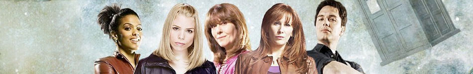

[Primary Navigation] |
|||||||||
|  | |||||||||
|
Rory WilliamsPortrayed by Arthur Darvill Rory Arthur Williams — sometimes called Rory Pond — was Amy Pond's husband. He became a companion of the Eleventh Doctor on the night before their wedding, but he died and was erased from history after being absorbed by the Time Field. Shortly before the Pandorica was opened, Rory reappeared, in a fashion, waited for Amy to come out of the Pandorica for 1,894 years and was restored to normal after the second Big Bang. He went on to marry Amy and resumed travelling with her and the Doctor. During this time, his child, Melody Pond, was born. When the Doctor married River, Rory became his father-in-law. In 2012, he was sent back in time by a Weeping Angel, and was soon followed through time by his wife. He died at age 82 some time before 2012. His gravestone stood in a graveyard in New York. Rory was humble, loyal, protective, and a bit sarcastic at times. He was timid in his first meeting with the Doctor. He was easily cowed by Dr Ramsden and terrified by the chaos surrounding the Doctor and Prisoner Zero. He still had the presence of mind to record evidence his comatose patients were strolling outside the hospital. He also helped Amy clear the hospital of patients before Prisoner Zero could kill them. Rory also showed significant compassion and empathy. This sometimes put him in danger, as when he sympathized with Jennifer Lucas and when his first instinct was to help the broken, insane Daleks of the Asylum. He was often found caring for others, sometimes as a nurse, and sometimes just as the TARDIS crew member who stopped to help newcomers acclimate. |
||||||||